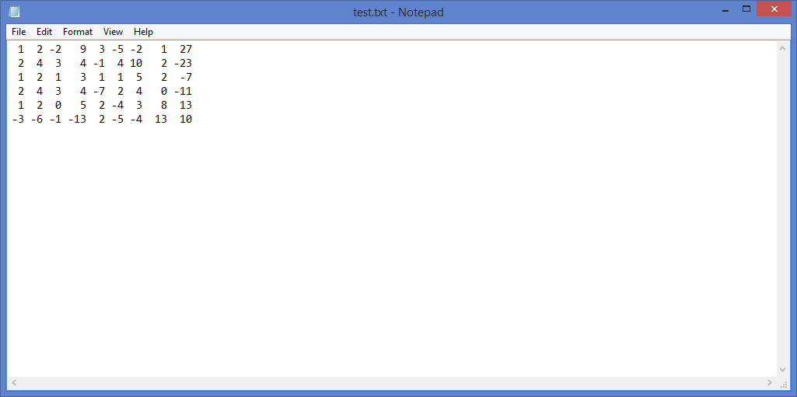
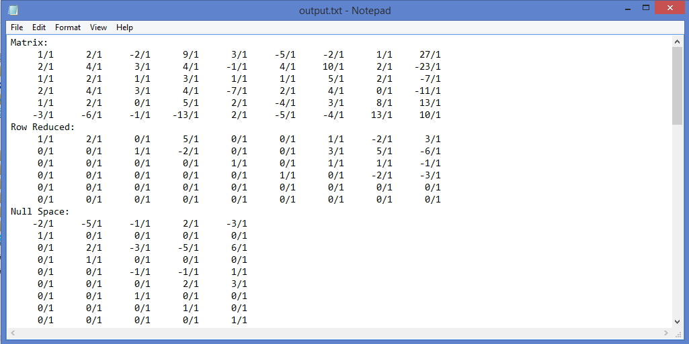
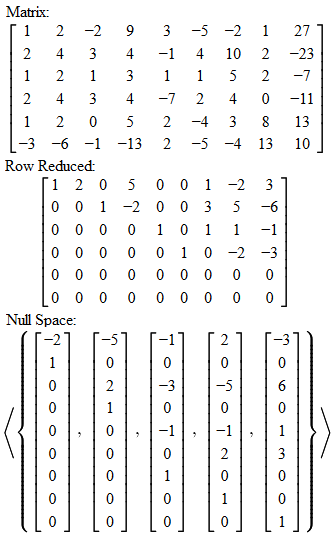
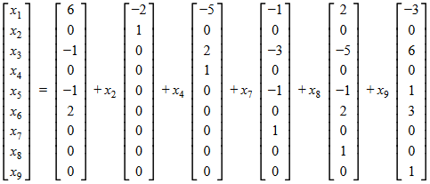

Matrix.cpp
A Linear Algebra Tool

Introduction
A simplistic C++ program which can perform rudimentary calculations regarding any sized matrix.
Features
- A custom Fraction class for dealing with rational numbers (vs the loss in accuracy and volatility with using floating point numbers).
- Gaussian-Jordan elimination to reduce any matrix into row-reduced echeleon form.
- Efficient calculation of the four fundamental subspaces (null, row, column, and left null spaces).
- Still to be implemented: determinant, characteristic polynomials, eigenvalues, Gram-Schmidt Procedure, Jordan-Canonical form, triangular forms, and possibly create an interactive and intuitive webpage UI.
Download
| Matrix.exe | Matrix.zip | Matrix.tar.gz | View on GitHub |
Demonstration
Learning linear algebra is rewarding in a sense that this newfound knowledge is powerful for solving problems in many areas: physics, maths, and even business, but actually crunching the numbers becomes a pain in the ass. Especially frustrating for students is making a small error in the beginning of the process and having the entire answer skewed. Nowadays, these algorithms are automated by computers, so this is intended as an aid to quickly check one's answer. Say for example you are tasked with solving the following set of linear equations:
x1 + 2x2 - 2x3 + 9x4 + 3x5 - 5x6 - 2x7 + x8 + 27x9 = -5
2x1 + 4x2 + 3x3 + 4x4 - x5 + 4x6 + 10x7 + 2x8 - 23x9 = 18
x1 + 2x2 + x3 + 3x4 + x5 + x6 + 5x7 + 2x8 - 7x9 = 6
2x1 + 4x2 + 3x3 + 4x4 - 7x5 + 2x6 + 4x7 - 11x9 = 20
x1 + 2x2 + 5x4 + 2x5 - 4x6 + 3x7 + 8x8 + 13x9 = -4
-3x1 - 6x2 - x3 - 13x4 + 2x5 - 5x6 - 4x7 + 13x8 + 10x9 = -29
This is an except from the brilliantly written "A First Course in Linear Algebra" by Robert Beezer, which to those who have not learned linear algebra and wish to should definitely check out. As you can see solving this by hand would violate your rights as a human being and quite frankly would be a waste of your time (my record is an hour after corrections). But let's try doing it in a blink of an eye. To start, let us take the coefficient matrix and input them into a text file with entries delimited by spaces and equations by new lines. I put my file by the program; if you did not, you'll have to type out their absolute/relative locations.
|  |
|---|
| Coefficient matrix in Notepad |
{kind=link}
If you're wondering why I took the coefficients of the unknowns, I only needed to get the null space of that matrix to produce the *spoiler* infinite solutions needed. Then to get an answer for the linear system, take some linear combination of the basis vectors of the newly found null space and add it to an augmented solution vector. I'll show you what I mean later. Now run the program as so:
- Matrix.exe test.txt output.txt
Open the conveniently named output file (change the 2nd parameter if you want something different) and you will see the original matrix, the row reduced matrix, and the four fundamental subspaces. Mind the messy fraction parts and lack of any ASCII art to make this any bit palatable; I may remake this for a web browser for aesthetics. The nicety however is all entries are stated in fractional form, so if there is some rational number, it won't show up as some ugly decimal number (although it itself isn't quite the looker either).
|  |  |  |
|---|---|---|
| Output in Notepad | How to interpret | Finding solutions |
{kind=link}
{kind=link}
{kind=link}
Thus we can see that we can alter 5 different variables and add an augmented form of the solution vector to retrieve our desired solutions (implies nullity of 5). If you are interested in learning more about linear algebra or wish to brush up on it, please look at "A First Course in Linear Algebra" for the math bits, while for a visual interpretation look at 3Blue1Brown's Youtube video series. Both are highly recommended (source: Me).